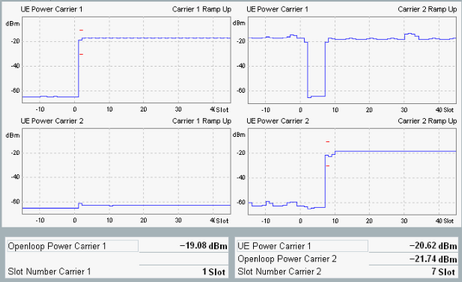

The WCDMA DPCCH open loop power measurement provides all measurement results in a single view. This view displays four diagrams, showing the measured UE power vs slot per carrier during the ramp up of each carrier.
Configured limits are indicated by red limit lines.
Scaling the diagrams To modify the ranges of the Y-axis, press the "Display" softkey and use the hotkey "Y Scale...". Both manual scaling and automatic scaling are possible. Manual scaling allows you to enter a range, to display the full range or to display the default range. Automatic scaling is used by default, adapting the Y-axis to the measured values. |
Below the diagrams, statistical evaluation of the results is displayed.

Diagrams to the left show the measured UE power vs slot per carrier during the ramp up of carrier one. Diagrams to the right show the measured UE power vs slot per carrier during the ramp up of carrier two. The measurement covers the slots -15 to 45. The measurement is triggered by WCDMA signaling application and starts so that the power ramping of a particular carrier appears between the slots 0 and 14.
- "Open Loop Power": the average UE TX power in the DPCCH power control preamble.
- "UE Power Carrier 1": the UE power of carrier one during the ramp up measurement of carrier two, averaged over measurement interval of 60 slots. The UE power of carrier two is not displayed, as it can be usually neglected during the power ramping of carrier one.
- "Slot Number": slot where the power ramp up of a particular carrier has been detected
For query of the results via remote control, see "Measurement Results".